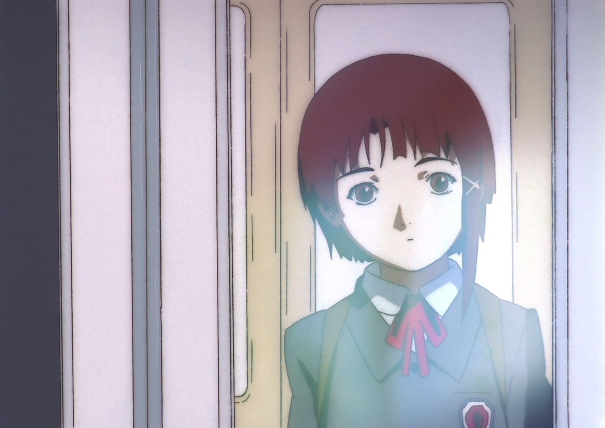
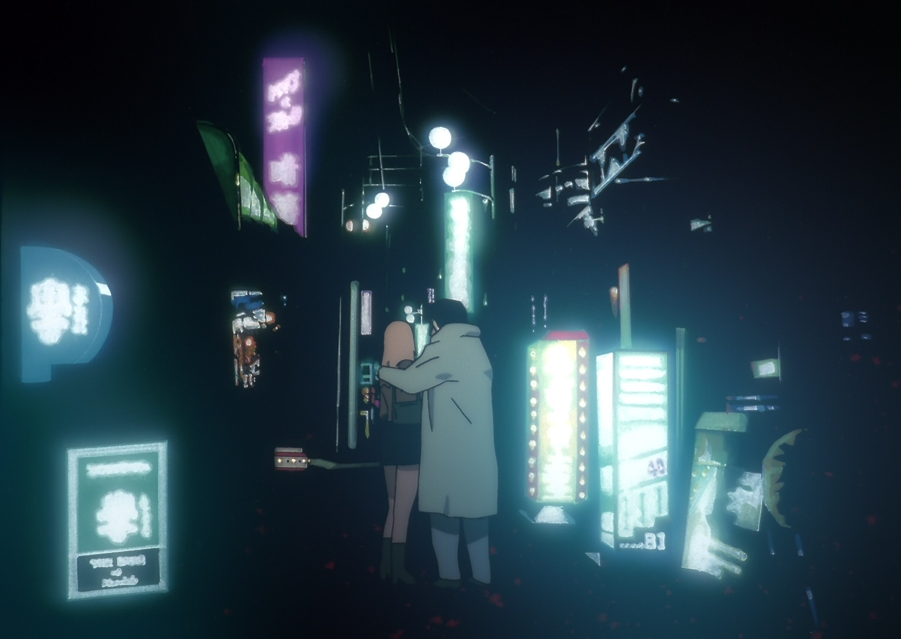

hello, stranger the city is loud again tonight.
the city is loud again tonight.
but here, it’s quiet.
sometimes i wonder if these thoughts are really mine, or just echoes passing through.
still, i write them down.
maybe someone, somewhere,
will understand.
until then—
this page is my small place
in the noise.
interesses.exe
animes & old technology
robotics & retrofutures
cybercore songs & sci-fi books
animes & old technology
robotics & retrofutures
cybercore songs & sci-fi books
somewhere between here & there

uma trilha para este lugar
“nem tudo que se perde está desconectado.”